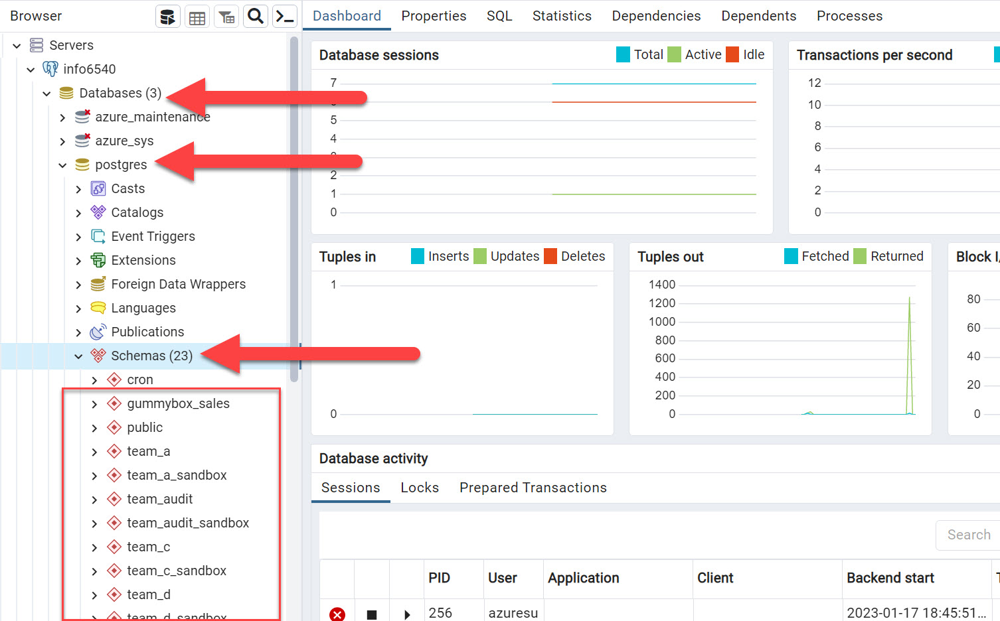
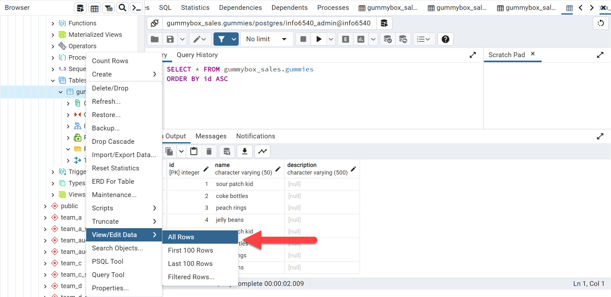

5 Relational database management systems
5.1 Learning objectives
In this hands-on chapter, you will learn how to connect to a PostgreSQL database hosted in the cloud and implement your database design by creating tables and populating them with data.
5.2 What is an RDBMS?
As we saw in the first chapter of this book. Database Management Systems (DBMS) are software that supports the development, maintenance, security, and use of databases. The R in RDBMS stands for relational, and it is the kind of DBMS that we will be using to implement and manage the relational databases that we have been developing. PostgreSQL is an increasingly popular RDBMS that can also handle non-relational data structures. It does not have an interface; it is the engine that stores your data and enforces rules regarding the content of your fields and tables, who can access them, etc.
5.3 psql and pgAdmin
psql is a command-line interface that allows you to manage and interact with PostgreSQL using commands and SQL code. You can essentially do everything you need to do in psql, including creating databases, users, tables, importing and exporting data, etc. However, the command-line interface is not very pleasing to the eye, and while database administrators and geeky coders might insist that it is better than using a graphical user interface (GUI) that allows you to perform operations by clicking buttons and filling structured forms, for this course, we will use such a free and open-source GUI called pgAdmin. You will notice that every operation you perform in pgAdmin is actually translated into SQL code, and it is that code which is executed and produces the outcome. This code is often displayed in pgAdmin and that can be a useful way to learn how to learn the SQL language.
You can install PostgreSQL on your computer and use pgAdmin to manage local databases. However, for this course, we will use a PostgreSQL database hosted on a Microsoft Azure server. The next sections walk you through the process of installing pgAdmin, connecting to the course database, creating tables on the schema created for your team, and adding data to your tables. By the end of this process, you will have a live database that can fulfill its intended purpose.
5.4 Installing pgAdmin
5.4.1 Go to the pgAdmin website and click on the download tab.
5.4.2 Choose your operating system
5.4.3 Select the latest version of the software
5.4.4 Download the installation file
At this point, you should just follow the instructions and install the software without changing any of the default settings. Note that when you open pgAdmin for the first time, you will be asked for a master password. Choose something you will remember.
5.5 Connecting to the server
The first thing you’ll want to do in pgAdmin is adding a connection to the info6540 server.
5.5.1 Set a name for the server connection
5.5.2 Enter the login details provided to you by email
You can now see the server connection on the left panel, and access it there.

5.6 Creating tables
5.6.1 locate your team’s schema
You will notice two schemas with your team name: one is just the team name, and the other has _sandbox at the end. The _sandbox schema is there for you to play around and try stuff out as you please. So, feel free to experiment there if you want to try something new and are afraid of messing up your main database.

5.6.2 Create tables
To create a table, click on the schema you want to create a table in, find the tables icon, right-click on it, and select Create, then Table…
5.6.3 Give your table a name
5.6.4 Define your table columns
5.6.5 Set foreign key constraints
Because you cannot add a foreign key constraint pointing to the id of a table that does not yet exist. You should create your validation (look-up) tables first, then create your data tables, and create you associative tables last. Here’s how you set the foreign keys, in the constraints tab of the create table process. If your table is already created, you can add the foreign key constraints in the by right-clicking the table and selecting properties… Here are a few screenshots that show what the process of adding a foreign key looks like:
5.7 Adding data to tables
Now that we have learned how to create tables in PostgreSQL using pgAdmin, we are ready to populate these tables with data. One important thing to remember when populating your tables is that the order in which we populate the tables is important. Just like a table cannot reference another table that does not yet exist, so is a foreign key column not allowed to contain a value that does not exist in the referenced column. In practice, this means that a product that does not exist cannot be part of an order, and a customer that does not exist cannot have an address in the database, which is pretty logical, and also prevents errors in the data. So, the order for data entry is the same as for table creation: validation tables first, then data tables, then associative tables.
The next two sections show how to populate tables manually or by reading the data from a file.
5.7.1 Manually
You can add data manually by viewing it and then manually filling or updating the cells.

5.7.2 Using the import/export tool
Adding data to cells one by one in pgAdmin can be a little time-consuming. You may wish to create CSV files with the data and then import this data to your tables with the import/export tool.
5.7.3 Locate the file to import on your computer
5.7.4 Set the appropriate options
5.7.5 Choose columns to be imported

Once the process is completed, we can verify that the data was imported properly by right-clicking on the table name and then selecting View/Edit Data.

5.8 Conclusion
That’s it! Now you know how to implement database designs on a real server and populate your tables with data. In the next week, you will learn the basics of the SQL language and how to write SQL queries to extract data from your database and produce database views that fulfill some needs for some users of the databases.